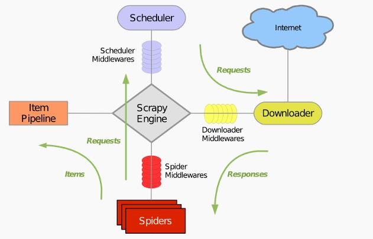

Instruction
框架（Framework）是整个或部分系统可重用设计，表现为一组抽象构建及构建间交互的方法；另一种定义认为，框架是可被应用开发者定义的应用骨架。简单讲框架是指对某一种技术进行抽象，提取出共同的特征，将其进行固化，使用框架可以避免重复造轮子，提高开发效率。Scrapy就是根据爬取数据流程设计的一种python爬虫框架

引擎(Scrapy Engine):用来处理整个系统的数据流，触发事务
调度器(Scheduler):抽引擎发过来的请求， 压入队列中，并在引擎再次请求的时候返回。
下载器(Downloader):下载网页内容，并将网页内容返回给蜘蛛
蜘蛛(Spiders):主要干活的，用来指定特定的域名或网页的解析规则，编写用于分析
response并提取item (即获取到的item)或者额外跟进的URL的类。每个spider负责处理一个特定(或一些)网站。管道(Item Pipeline):管道内有蜘蛛从网页中抽取的项目，它的主要任务是清晰、验证和存储数据。当页面被蜘蛛解析后，将被发送到项目管道，并经过几个特定程序的次序处理数据。
下载器中间件(Downloader Middlewares):scrapy引擎和下载器之间的钩子框架，主要是处理Scrapy引擎与下载器之间的请求及相应。
蜘蛛中间件(Spider Middlewares):介于Scrapy引擎和蜘蛛之间的钩子框架，主要工作是处理蜘蛛的响应输入和请求输出。
调度中间件(Scheduler Middlewares):介于Scrapy引擎和调度之间的中间件，从Scrapy引擎发送到调度的请求和响应。
在实际的Scrapy应用中，我们一般只能用到三个模块，一个是Spiders，这个模块负责定义抓取地址和抓取规则并进行页面抓取；二是items，负责定义抓取的数据格式；三是PipeLine，负责将抓取到的数据进行处理。
Scrapy 详解
Setup Scrapy
在Windows中安装Scrapy时一般会由于 Windows 底层库的问题导致安装比较繁琐，所以建议在 Linux 或 Mac OS 中安装。
使用 pip 安装:
pip install scrapy |
安装完成后即可使用 scrapy 框架了。
Getting Start
建立 Scrapy 项目w3c:
scrapy startproject w3c |
执行成功后在 w3c/spiders 下新建爬虫文件 w3cSpider.py 项目的目录及结构如下:

上述目录中，setting.py 负责进行项目配置（如PipeLine调用），延迟下载时间设置，代理设置，user-agent设置等。以 PipeLine 设置为例，抓取的数据后续可能需要多个 PipeLine 处理，如先进行数据清洗使用 DataCleanPipeLine，然后进行数据保存 DataSavePipeLine。
在 settings.py 设置这两个 pipeLine 的代码如下:
ITEM_PIPELINES = { |
上述代码中 PipeLine 后的数字代表了执行顺序，数据越小越先执行。setting 配置好 PipeLine 后就需要进行代码编写，具体的 PipeLine 实现在 pipelines.py 中实现，一个 PipeLine 对应 pipelines.py 中一个类，类名和 setting.py 中设置的相同。PipeLine。
items.py 用来设置要爬取的数据字段，scrapy 借鉴了 django 数据模型的思想，将提取的数据组织成一个 item 类，类中属性是要爬取的字段。如要爬取一个用户的信息，items.py 可以这样写:
import scrapy |
当从网页中获取用户信息数据后可以将其保存在 UserItem 中。
Scrapy 实战
首先编辑 items.py 设置要抓取的数据，本项目是抓取页面中的名称，链接和描述，具体实现如下：
import scrapy |
然后编写 w3cSpider.py ,设置爬取页面的地址及爬取规则:
import scrapy |
本项目只需要将抓取的数据存储起来即可。所以在 pipeline.py 中实现 settings.py 设置的 W3CPipeline类即可，